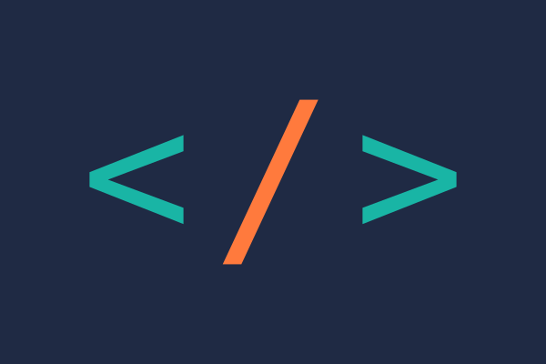
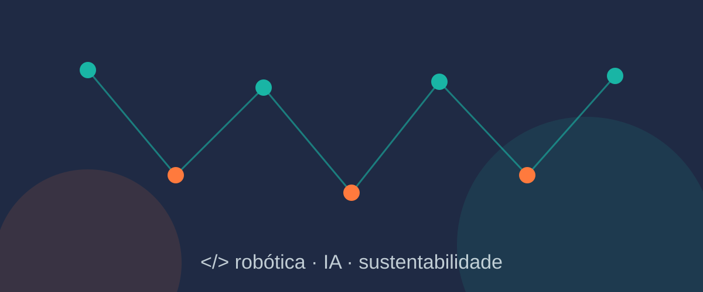
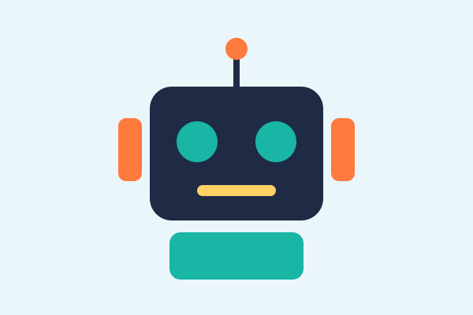
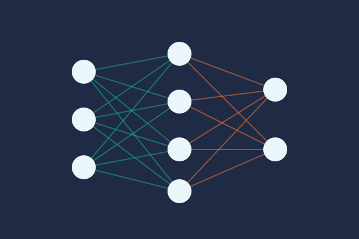
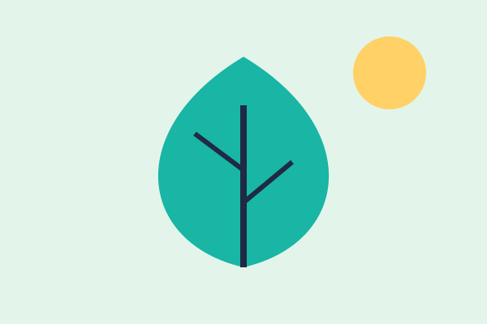
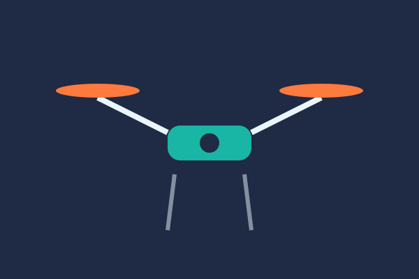

Categoria: Programação
Desafios de lógica e programação em equipe, do iniciante ao avançado.
A TechFest reúne programação, robótica, inteligência artificial e sustentabilidade em um só festival. Venha aprender, criar e se conectar com quem está moldando a tecnologia do futuro.






09h00: Abertura e credenciamento
10h30: Maratona de Código
14h00: Arena dos Robôs e Laboratório de IA
17h00: Show de Drones e encerramento
A TechFest é um festival fictício de tecnologia e inovação criado para aproximar estudantes, profissionais e curiosos das áreas que mais transformam o mundo. Em um dia de atividades, o público vive experiências práticas de programação, robótica, inteligência artificial e sustentabilidade. Nosso objetivo é inspirar novas ideias e mostrar que a tecnologia pode ser acessível, criativa e responsável.